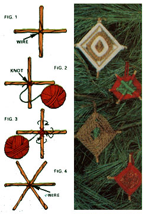

How would you like to decorate your Yuletide tree with lovely homemade ornaments this year? There's nothing to it . . . just gather the family together, get some yarn and sticks (anything from pieces of dowel to small twigs will do), and make a party out of the project.
Cross two of your sticks (cut to whatever length you want), and wire or tie them together as shown in Fig. 1. Then hold the struts between your thumb and forefinger and-leaving a loose end three inches long-wrap three or four turns of yarn around the cross's intersection. Knot off these "anchor" strands (Fig. 2), and start to weave the yarn onto the frame . . . making a loop around each stick as you go (Fig. 3).
When your decoration is as large as you want it to be, tie a knot (so the weave won't unravel) and fasten a "hanger" loop-made from a 10-inch-long piece of yarn-to the last wrapped strand.
You can vary the designs of your ornaments in several ways. For instance, weave clockwise for a while, and then tie the yarn off and cut it. Now, start again from the same stick that you stopped on-and weave counterclockwise. (This technique will produce an especially pretty decoration if you just use a different color of yarn every time you change directions.)
Or, you can make a six-pointed shape. Fasten three sticks together-as' shown in Fig. 4-with pliable wire (yarn won't hold this "triple cross" securely enough). Then, wrap,it with yarn as you did the four-sided ornaments.
If you'd like a little "sparkle" in your holiday, why not paint designs on the finished ornaments with glue, and sprinkle glitter onto the sticky patterns? (You can buy the shiny flecks; in kits that include glue tubes with "writing" tips, at most dime stores.)
You'll find that making your own Christmas tree decorations is downright habit-forming. Who knows, after you wrap up a few of these yarn ornaments you might want to string some popcorn or cranberries, and have a completely home decorated tree that'll bring the "good old days" right into your living room!
|
 |
|
|